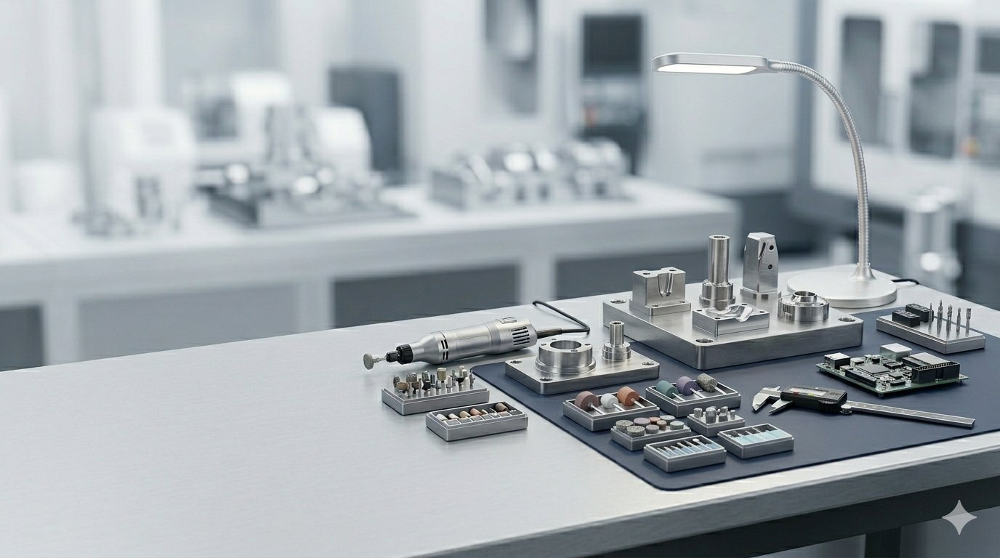

OUR BUSINESSES
事業領域
KANEXが対応する主な事業領域。ご用件に合わせてお進みください。



KANEXは、法人の実務課題に正面から応える会社です。
法人向け施工から家庭向けリフォーム、電子基板・実装・ハーネスまで。事業領域で、継続して頼れるパートナーを目指しています。
KANEXが対応する主な事業領域。ご用件に合わせてお進みください。

複数の専門領域をひとつの会社で。それが、KANEXの価値です。
01
塗装・補修・防水・解体・復旧まで、一社でまとめて依頼できます。元請・管理会社の工程管理負担を軽減します。
02
工場・倉庫・物流施設・事業所など法人建物の改修実績が豊富。現場の特性を理解した柔軟な提案が可能です。
03
設計・実装・検査設備を保有。電子基板を中心とした調達実務に対応し、ハーネス・部品・予備品もまとめて相談できます。
04
創業以来、法人の実務課題に向き合ってきた実績と信頼。地域に根ざし、継続対応できる安定したパートナーです。
株式会社カネックスは、2002年2月の設立以来、愛知県蒲郡市を拠点に、塗装・解体・リフォーム事業と電子基板・実装・ハーネス事業の2つの領域で、法人のお客様の実務課題に応えてきました。
法人施設での施工対応力を活かした家庭向けサービスも展開し、地域の皆様にも貢献できる体制を整えています。
会社概要を見る蒲郡市周辺でのリフォーム・外壁塗装・解体に役立つ情報をお届けします。